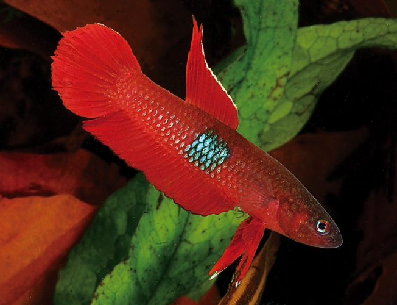

Systématique
- Ordre : Anabantiformes
- Famille : Osphronemidae
- Genre : Betta
- Espèce : B. brownorum
- Groupe : Complexe coccina

Betta brownorum est une espèce minuscule de combattant labyrinthidé, endémique des tourbières forestières de Bornéo. C'est l'une des plus petites espèces de Betta, mesurant à peine 2,5 à 3 cm de long à l'état adulte.
Le mâle arbore une coloration de rouge brique à violet foncé selon la population d'origine (variétés Sibu et Matang), avec un imposant point latéral iridescent bleu-vert au milieu du corps. La femelle est plus brune avec la même tache, mais nettement moins intense. Le corps est fusiforme et légèrement comprimé.
Cette espèce appartient au groupe coccina, distinct du groupe splendens. Elle se différencie de Betta coccina par le bord terminal blanc des nageoires pelviennes, tandis que B. coccina les a noires.
Betta brownorum est une espèce timide et délicate, peu adaptée aux aquariums communautaires. Contrairement aux idées reçues liées à son épithète spécifique, elle n'est pas exceptionnellement agressive, mais reste très territoriale, particulièrement lors de la reproduction.
L'espèce peut être maintenue en couple ou en petit groupe (un mâle avec plusieurs femelles) dans un aquarium très planté offrant de nombreuses cachettes. Cependant, certains aquariophiles recommandent la maintenance en couples isolés après avoir observé des agressions soutenues entre dominants. L'espèce demeure réservée à l'aquariophile confirmé, exigeant une attention particulière aux paramètres d'eau et à la composition de l'habitat.
Mode : constructeur de nid de bulles; le mâle érige son nid à la surface ou sous la végétation flottante.
Le couple n'a pas besoin d'être séparé avant le frai. Il est particulièrement important de fournir une abondante végétation aquatique de surface et des cachettes (tuyaux en plastique, anciens boîtiers de pellicule photo) où la femelle peut se réfugier, notamment après le frai. La ponte comprend généralement moins de 20 œufs, bien que des portées jusqu'à 50 ne sont pas rares.
L'éclosion intervient après 24 à 48 heures, et les alevins absorbent leur sac vitellin après 3 à 4 jours. Le mâle garde jalousement le nid et récupère tout alevin tombé. Les mâles peuvent enchaîner plusieurs incubations et s'amaigrissent rapidement; il faut surveiller l'état du reproducteur.
Dimorphisme sexuel : très marqué; le mâle est plus coloré que la femelle avec des nageoires plus allongées. La femelle est plus terne, brun-clair, avec un ventre arrondi en période de maturation ovariennes.
Espérance de vie : données limitées, probablement 3 à 5 ans en captivité dans les conditions optimales. L'espèce est peu élevée et fragile.
Betta brownorum fréquente les forêts marécageuses tourbouses de très faible profondeur (5–10 cm localement) avec un substrat épais de litière organique non décomposée. Le peuplement végétal comprend Cryptocoryne pallidinervia et Barclaya motleyi. L'eau est extrêmement acide et peu minéralisée, teintée de noir par les humates.
Les tourbières connaissent des cycles d'inondation saisonnière; durant les périodes sèches, l'espèce survit en se réfugiant dans la litière humide. Cette adaptation aux environnements extrêmes explique l'absolue nécessité de maintenir des paramètres d'eau spécifiques en captivité.
Répartition

Origine naturelle :
- Île de Bornéo, endémique des régions sud et ouest du Sarawak, Malaisie.
- Populations limitées au Kalimantan Barat (Indonésie).
- Localité type : petit marais tourbeux forestier à 2,55 km au sud de Batang Rejang, route Sibu–Kuching, Sarawak (2°08'N, 112°00'30″E).
- Variétés de collection nommées : Sibu, Matang (tache latérale plus grande à Matang).
De nombreux habitats ont disparu avec l'urbanisation et la conversion des tourbières en projets immobiliers. L'espèce reste très rare en aquariophilie et hautement menacée à l'état sauvage.
Paramètres de maintenance
Température : 24 à 30 °C, idéalement 26–28 °C; attention au stress thermique.
pH : 4,0 à 5,5, très acide; l'espèce dépérit en eau neutre ou alcaline.
GH : 1 à 4 °dGH maximum, eau extrêmement douce; l'ajustement des minéraux est indispensable.
Courant : nul; eaux stagnantes obligatoires.
Volume conseillé : minimum 50 L pour un couple ou un groupe; priorité à la hauteur réduite (30 cm) et à la surface. Aquarium très planté et densément végétalisé.
Régime alimentaire
Régime : insectivore carnivore strict; l'espèce refuse toute nourriture sèche.
En aquarium, n'accepte que la nourriture vivante ou congelée : petites daphnies, artémias, vers de vase, larves de moustiques. Les insectes terrestres (fourmis, acariens) trouvés naturellement sont appréciés.
Les proies vivantes sont obligatoires pour maintenir la santé, les couleurs et la mise en condition reproductrice. Cette exigence est l'un des principaux défis de maintenance.